Group exhibition · with Primeira Desordem (Hugo Gomes and João Marques), Tiny Domingos
OFF FIELD

On the occasion of the invitation to participate in the exhibition Off-Field, I was left with a sense of the defining rule in football, which is off-side. Without this rule the game would have no strategy built in; it would in fact become less, and maybe not reach the epic dimension it has in our day and age, for the obvious good reasons and the bad ones too.
In the last years, ten years exactly I dare to say, I have dedicated myself to mastering the techniques of printing. One of the reasons I moved to Germany, the land of the Gutenberg press and the less known Northern Renaissance. Having developed an extensive body of work, from small scale pieces to large ones, I have reached a point of exhilarating freedom, combined with an ever greater curiosity to see how far I can push the techniques of printing. In the meantime I don't call my prints prints, but rather paintings; they live in a limbo between one and the other. I do not make editions of some works: they are printed once, layer over layer, compounding meaning and expression, until the end is reached, somehow.
Off-Field, off-side, like a ball I feel I am. Not obsessively one sided, but with many sides, to my artistic curiosity.
One of the off-sides, off my own field, I make oil paintings (which I have never shown), thinking about Nicolas Poussin, or the fresh expression of Josh Smith. I would like to paint the hairs of a horse the way Rubens does, or clouds the way El Greco does. The negative space of Rembrandt, or the sweet faces of Josefa de Óbidos; the list goes on, and so, as long as I can, I will explore off the field, beyond the field.
These paintings recall visual still lifes, a fictional rendition of an artist's journey in search of that moment where past, present and future coincide in the perfect painting.
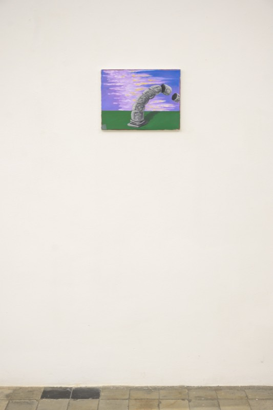
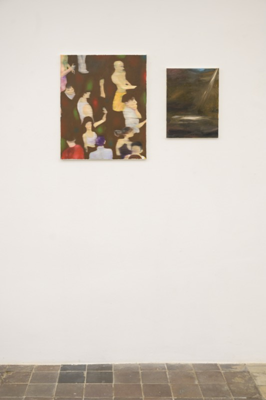
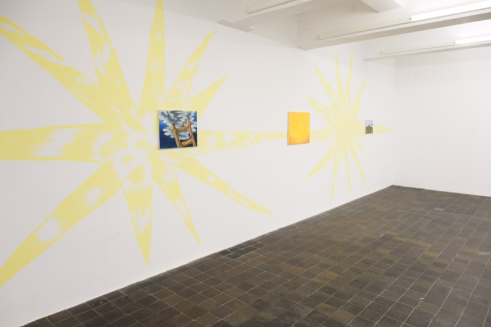
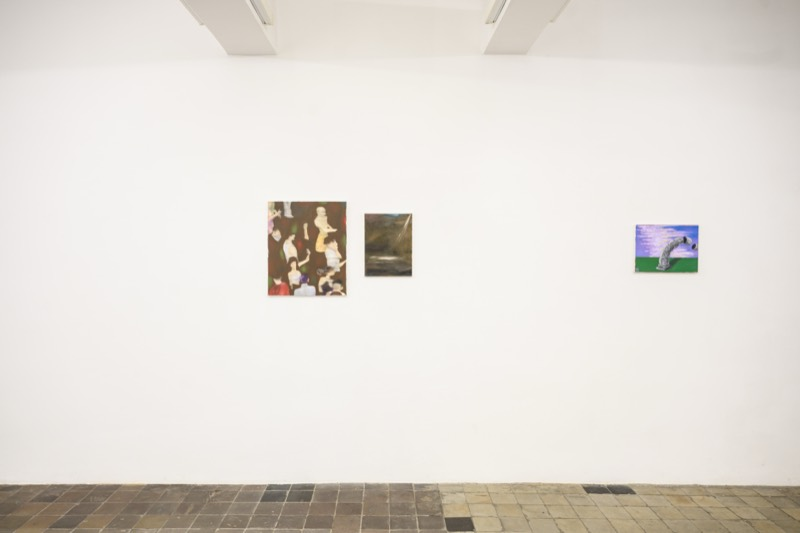
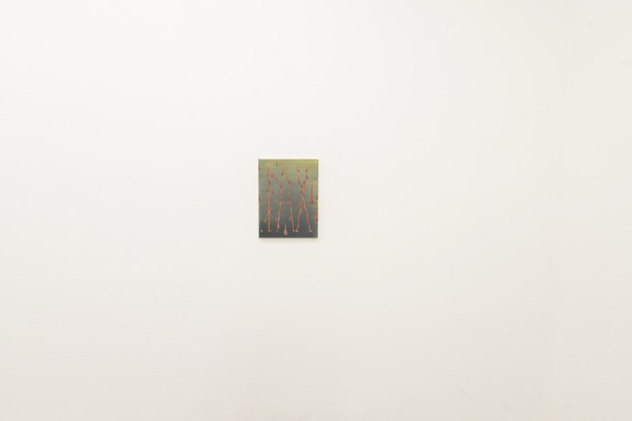
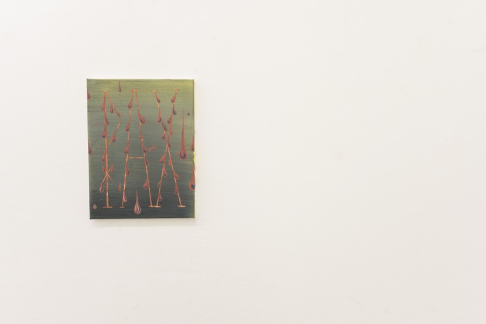
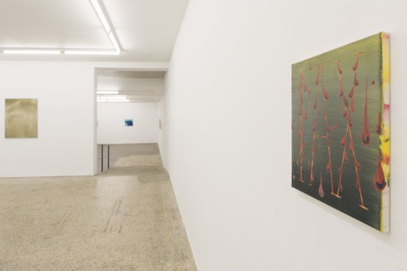
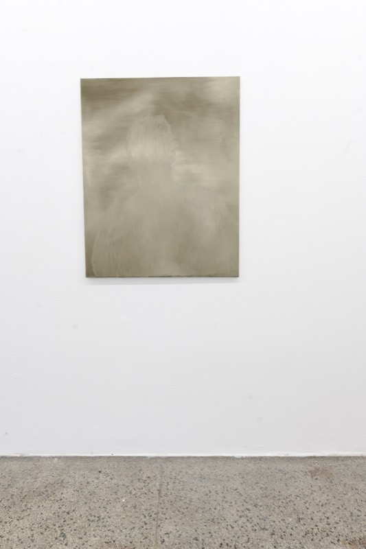
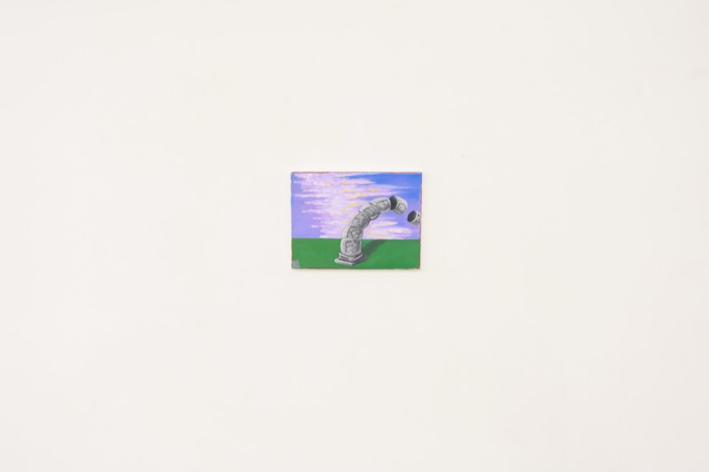
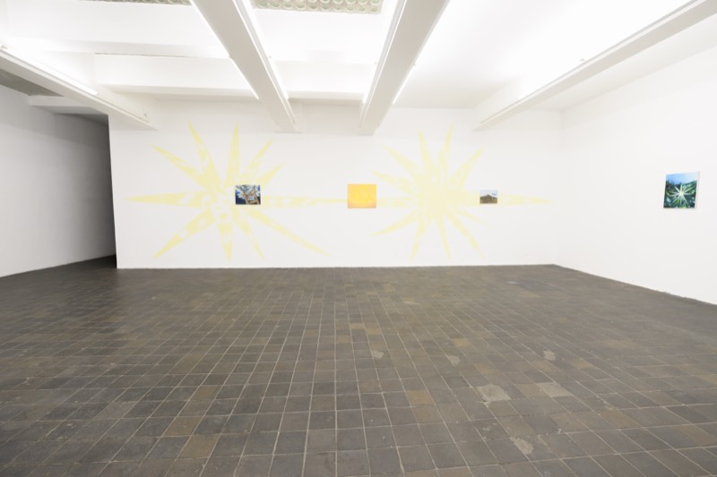
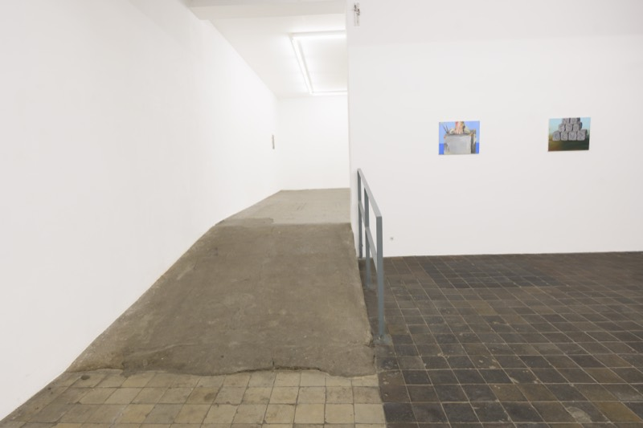
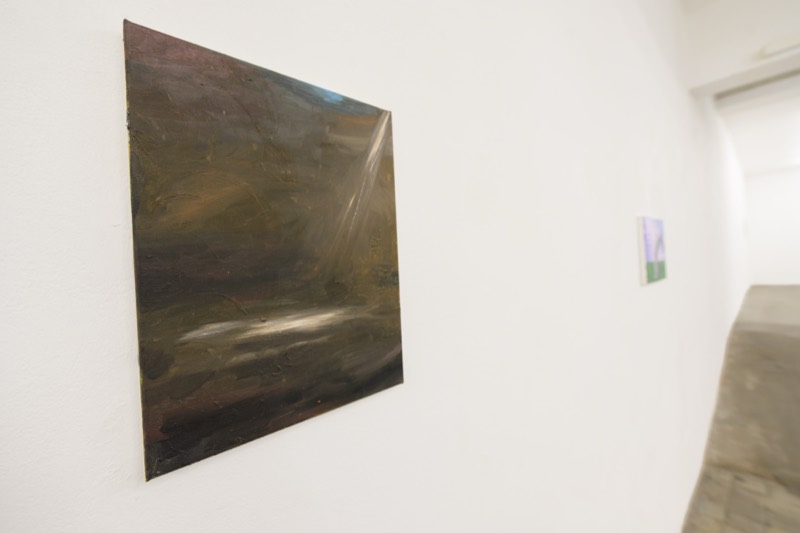
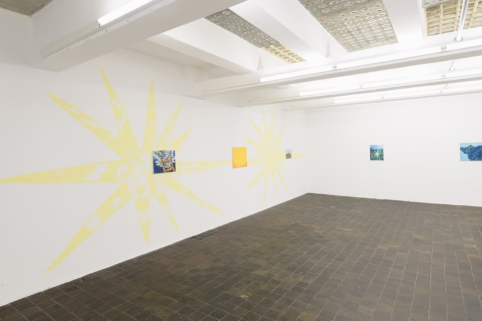
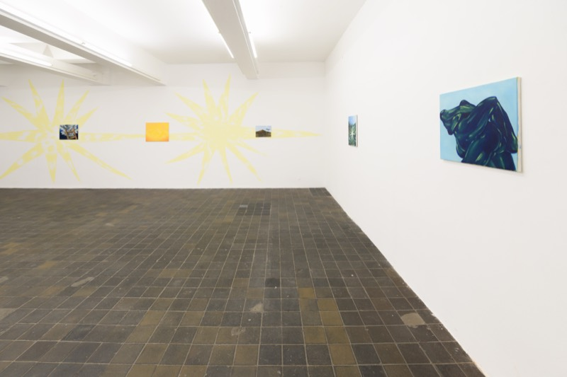
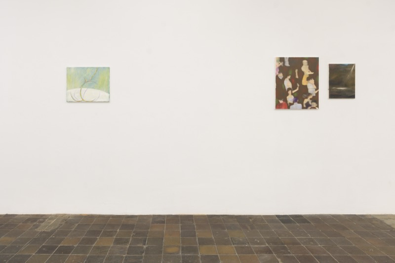
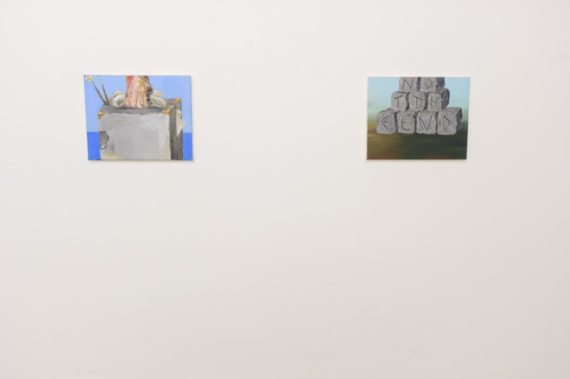
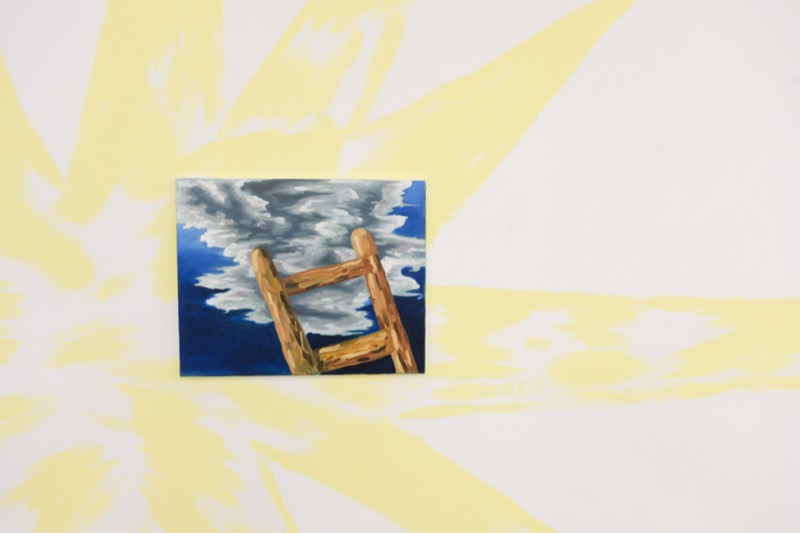
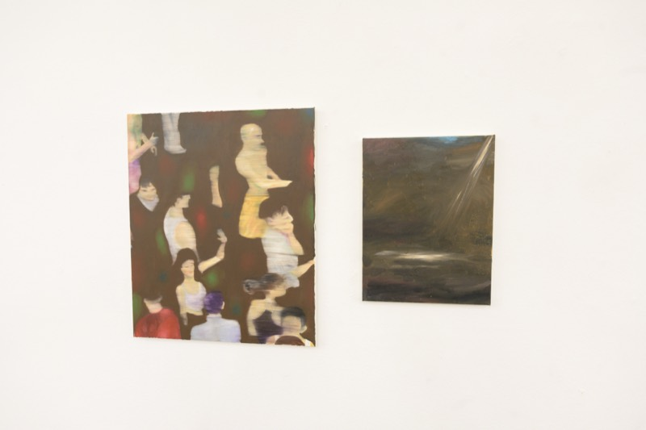
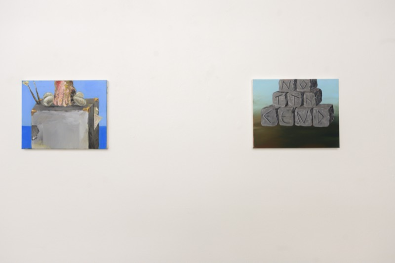
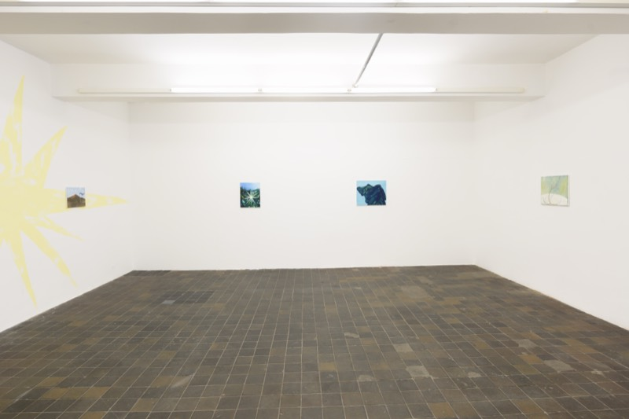
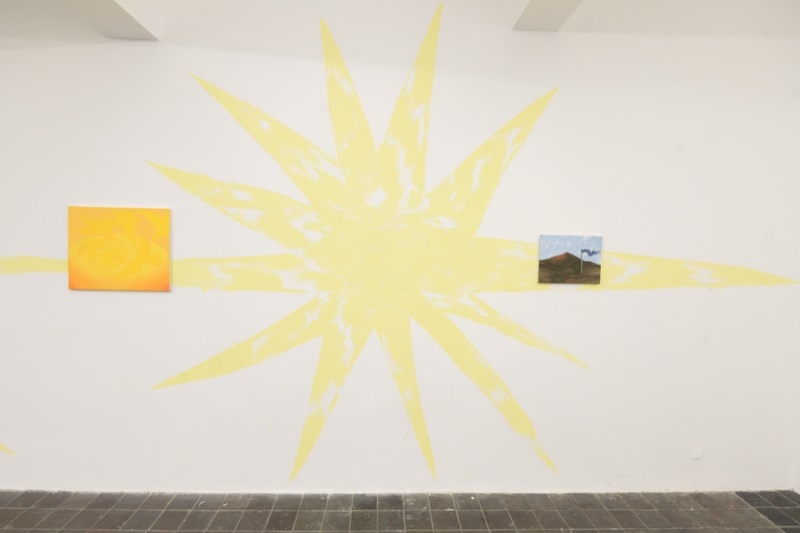
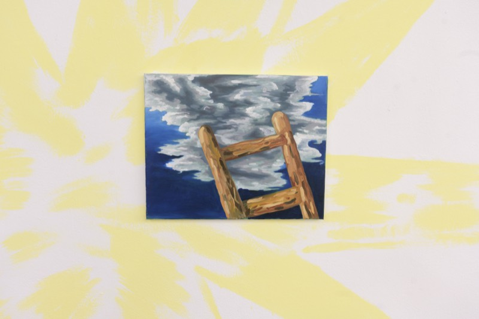
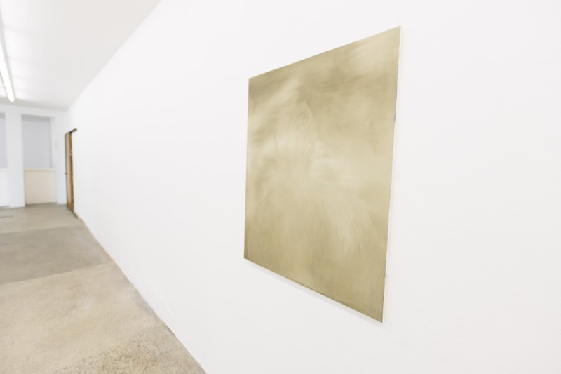